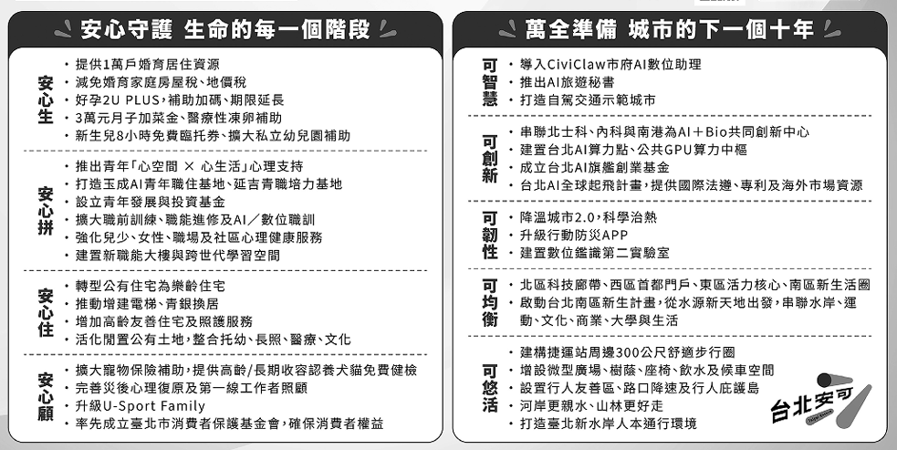
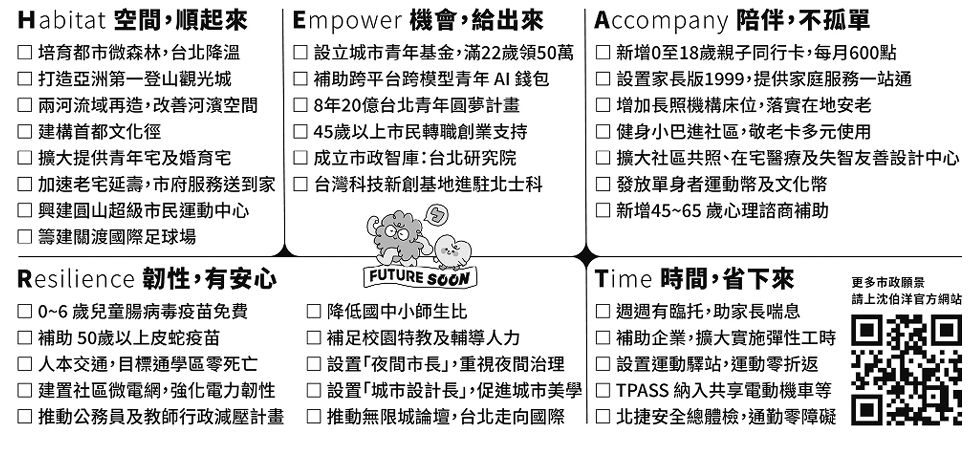

兩邊都用文宣自己的標題稱呼。藍色：「安心守護 生命的每一個階段／萬全準備 城市的下一個十年」文宣，標誌為「台北安可」，文宣上沒有印候選人姓名。綠色：「HEART」文宣（Habitat、Empower、Accompany、Resilience、Time），文末寫「更多市政願景請上沈伯洋官方網站」。文字依原圖逐條轉錄，類別、類型、難度與說明為本頁加註。預設藍左綠右只是收到文宣的先後，可用「左右對調」交換；類別依兩方合計條數由多到少排列。

